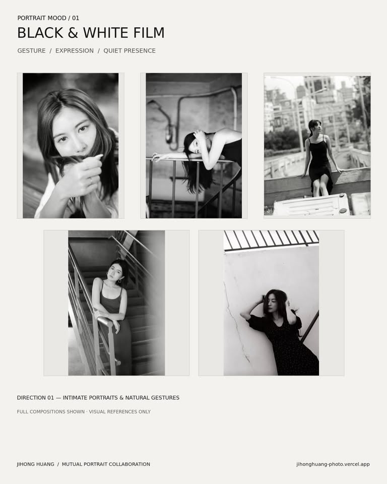
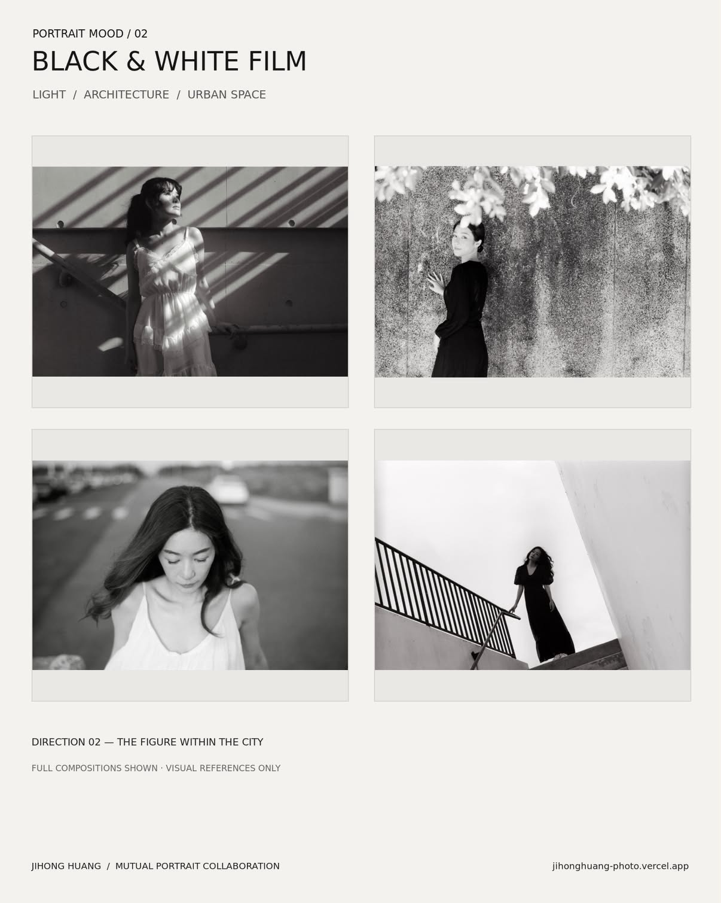

拍攝方式
這次以黑白攝影為主。我會主要用底片相機拍，也會帶數位相機試拍幾張，看看不同的影像效果。

這次以黑白攝影為主。我會主要用底片相機拍，也會帶數位相機試拍幾張，看看不同的影像效果。
靠牆、搭著扶手，或走到一半回頭。會拍近一點的表情和手勢，也會把樓梯、欄杆與街上的光影一起拍進來。
找空間寬一點的地方，試幾張小跑、揮空拳或輕跳。我會抓一點自然的晃動感，動作可以照妳習慣的方式做。

拍攝後加上底片沖洗和修圖，預計約 2–3 週會把照片傳給妳。收到的照片可以分享在妳的 Instagram。
交件後，我會先和妳確認哪些照片適合投稿，再試著投給我平常投稿的平台，例如 LFI 或 PhotoVogue。如果有照片被編輯選上，我會私訊跟妳說。妳也可以依平台的分享方式，在 Instagram 發照片時標註平台，讓更多人有機會看到。
拍攝時，如果身體有任何不適，或對某個動作、角度或拍法覺得不自在，都可以直接跟我說。我們可以先休息、換個方式，或先停在這裡。拍攝節奏可以隨時調整。